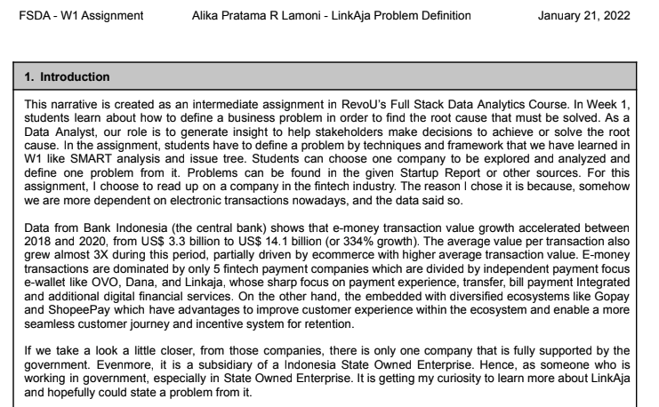

Description : Amazon's 6-Pagers version of understanding a problem and defining the solution of the Link Aja case.
Role : Data Analyst
Objectives : To answer the business problem of Link Aja in order to increase daily average transaction.
Highlight insights and recommendations :
- Defined problem : How to increase the active-registered ratio of LinkAja from 12.41% to 15% by increasing the monthly active users and mantaining registered users compared to last period by the next quarter.
- Strategy priorities :
1) Focus on % avg discount/collaboration increase from 10% to 20%
2) Focus on % avg incentive/transaction increase from 10% to 15%
3) Focus on % avg engineer solved per time per error increase from 1 day to 60 minutes

Description : Understanding problems from Link Aja using SMART methods and issue tree to define metrics solution to answer the problem.
Role : Data Analyst
Objectives : To answer the business problem of Link Aja in order to increase daily average transaction.
Highlight insights and recommendations :
Metrics to achieve # promo increase and # merchant increase in order to increase the # active users :
- % avg discount/collaboration increase : from 10% per collaboration to 20% per collaboration
- % avg incentive/transaction to merchant increase : from 10% per transaction to 15% per transaction
Metrics to achieve # error decrease and # campaign increase in order to maintain the # registered users :
- % avg engineer solved time per error increase : from 1 day per error to 60 minutes

Description :
- Analyzing data in order to get insights of the customer trips and growth from each region.
- Analyzing data in order to get insights of how many account that coming back after 2014.
Role :
As Data Analyst who perform :
- Retention cohorts analysis
- Querying in BigQuery
- Data visualization using Google Data Studio
- Understanding data and gain insight
Highlight insights and recommendations :
FORD GO BIKE
1. The highest growth is on June 2017 with 1312 %
2. The highest total trips is in October 2017 with around 75K
3. Growth from 2014 to 2017 is fluctuate between range -26% to 29%
4. There are suspiciously missing datas in July 2017
HACKER NEWS
1. Author in the first quarter of 2014 had higher retention than others
2. Author in January has the highest retention although dropped significantly in the
first month and decreasing along the year
3. The highest churn at the first month is from author in November
The number of author/user from the website has decrease gradually from month to
month. Its implied the low engagement of user to the website. Then, they shall figuring
out a marketing method or innovation of the website to increase user engagement,
obtain new user, and also maintain the loyal one. In order to reduce the churn rate.

Description :
- Analyzing data to gain the information of price, area, and property type in Kuala Lumpur.
- Analyzing data to gain the information of payment value, actual delivery time, number of order, payment type, and freght in Brazil E-Commerce.
- Proving an experiment of a new page in website of Brazil E-Commerce will have a better conversion rate.
Role :
As Data Analyst who perform :
- Data preparation
- Exploratory Data Analysis and basic statistics
- Prediction of Property Listing in Kuala Lumpur with regression using spreadsheet
- Prediction of freight from Brazilian E-Commerce with regression using spreadsheet
- A/B testing
Highlight insights and recommendations :
PROPERTY LISTING IN KUALA LUMPUR
- The most cheapest, average, and most expensive property in KL are respectively RM 406, RM 1.5M, and RM 5.1M
- The smallest, average, and biggest property in KL are respectively 130 sqft, 1738 sqft, and 4450 sqft
- The most and least property type in KL are respectively "Condominium" and "Flat"
BRAZIL E-COMMERCE
- The most order is in November 2017
- The figure indicate a positive growth from time to time
- People tend to order more on the weekdays rather than on weekend
- On Monday people order more and then slightly decrease until Saturday, and then will climb up again in Sunday
- Evidence is not sufficient enough to say that the new page will have a better conversion rate than the old page

Description :
- A customer segmentation to make the marketing budget more on target
- Correlating between ordeer value, customer education, and customer economic performance
Role :
As Data Analyst who perform :
- Data preparation
- Data gathering from external sources (GRP & Education Index)
- Data analysis using Python in Google Collab
- K-Mean Clustering
- Gaining insight into marketing target in details
Highlight insights and recommendations :
- Market target : high capability and low spend cluster
- Top target area : Sao Paolo
- Top target item : Bed & Bath Table
- Market method : discount, advertising, and freight freight incentives
- Customer behaviour assumptions : functionality, healthy life style, tech savvy
- Market content :
○ expose high quality and high functionality
○ expose healthy, natural, and eco-friendly ingredients or materials
○ promo package for woman who buy sport_leisure and health_beauty
○ more cashback for payment using e-wallet
○ freight incentives to customer state that has average %freight per price above 50%

Description :
- Visualizing data to gain insight
- Making a dynamic dashboard to present to stakeholder
Role :
As Data Analyst who perform :
- Exploratory Data Visualization
- Data visualization using Tableau
- Making a dashboard using Tableau
Highlight insights and recommendations :
- Most of the neighbourhood that located along the shoreline has more listings than the center-located.
- The most room that type that rented is private room and then the entire home/apartment type.

Description :
Give a recommendation to the business owner about factors that must be considered prior to opening a housing rental business in Germany, such as:
- Location
- Type of flat and Facilities
- Area
- Price range
Role :
As a part of Data Analytics team who perform :
- Data preparation
- Data gathering from external sources
- Data analysis using Python in Google Collab
- Exploratory Data Visualization
- Data visualization using Tableau
- Making a dashboard using Tableau
Highlight insights and recommendations :
- Location in Duisburg, North Rhine-Westphalia
- Type of flat is apartment
- Facilities that we suggest to have in the housing are: central heating, one year free telekom, balcony, and cellar
- Cost per sqm range in 7.53 to 9.61 eur/sqm
- Living space range in 58 to 77 sqm
- Total rent range in 436.49 to 740.12 eur

Description :
- Prediction of the unit price of steel reinforcement bar compared to the price of IDX Composite (IHSG), USD, and CNY
- Using the Artificial Neural Network
- The historical data of the steel unit price was taken from my company's previous purchase data from 2018 to 2021
- This prediction could be useful in a procurement phase of a project, to help the project estimate the budget and also while negotiating with the vendor, to determine whether or not the quoted unit price is reasonable
Role :
As a Data Analyst who perform :
- Data gathering
- Data preparation
- ANN modelling
- Data training
Highlight insights and recommendations :
- The model has an absolute error by Rp. 365/kg, which means the predicted result may differ in a range from +365 to -365
- Prediction could be improved by tuning the parameter and add more data and feature
- Model could be embedded in a web based app so everyone could use